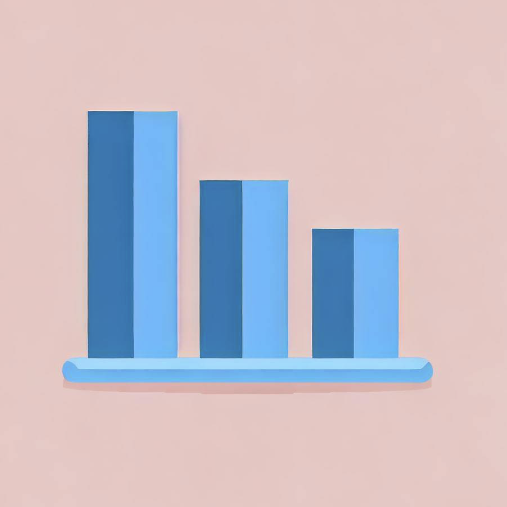
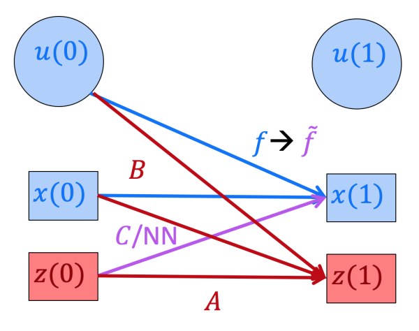
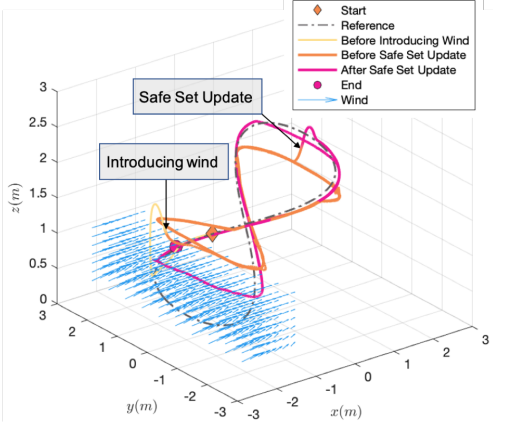
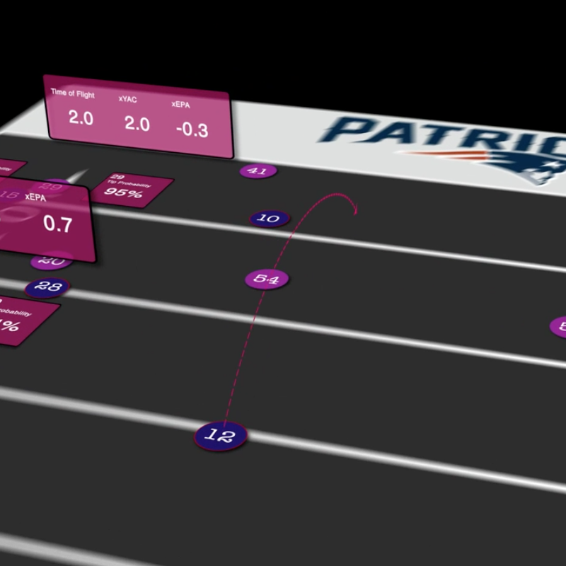
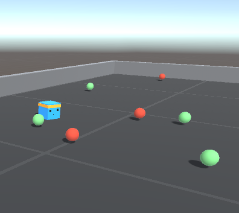
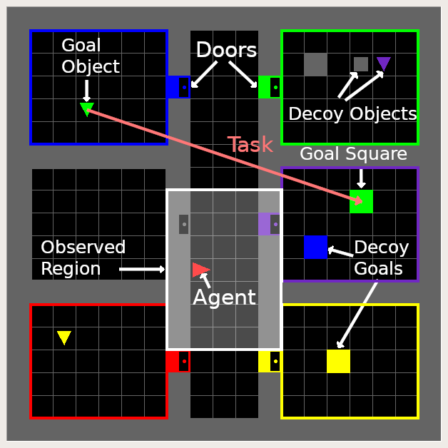

Suvansh Sanjeev
I am an RL researcher at OpenAI on Sébastien Bubeck's team. I worked on our early robotics revival efforts, including training the first VLAs at OpenAI, and co-created algorithms used to train all of our flagship models.
I was previously on leave from my PhD at the Robotics Institute at Carnegie Mellon University, advised by Zico Kolter and Zac Manchester. I graduated from UC Berkeley, where I worked with Sergey Levine and Claire Tomlin in the BAIR Lab on deep RL and safe learning.

Interests
Last year, I worked on Brilliantly, making open-source AI projects and providing custom AI solutions for clients. You can learn about the projects Brilliantly worked on here.
My past research worked towards bringing reinforcement learning to the real world. Most recently, I worked on gray-box methods for control of quadrotors. I have also worked on developing more natural means of task specification for deep RL to avoid the burden of manually engineered reward functions, as well as on developing data-efficient learning techniques that allow for safety guarantees throughout the learning process.
Projects

Research





Teaching
I received the 2020-2021 Outstanding Graduate Student Instructor Award at UC Berkeley, where I was fortunate enough to serve as the head teaching assistant for Professors Gireeja Ranade, Alexandre Bayen, and Babak Ayazifar. One of three lectures I delivered during Fall 2019 can be found here.
- EECS 127 — Convex Optimization · Spring 2019, Fall 2019 (Head TA)
- EE 120 — Signals and Systems · Fall 2018 (Head TA)
- CS 61C — Great Ideas in Computer Architecture · Summer 2018